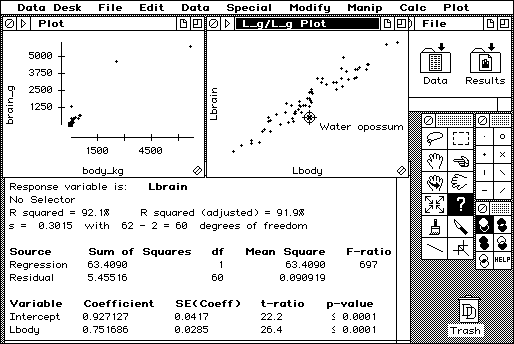

Download
datadesk-7.0.3.zip (635K) Data Desk 7.0.3 application packaged into a zipped hfs disk image and checksum file. The disk image can be mounted with Mini vMac.
copyright: ©2014 Data Description
mod date: Dec 20, 2014
license: free for non-commercial use
--- to buy Data Desk for OS X or Windows, see
http://www.datadesk.com ---
A tool for Exploratory Data Analysis (EDA)

Data Desk, first released in 1986, is one of the oldest Macintosh programs still actively developed and sold. It is now cross platform with support for OS X and Windows. But in honor of its origin, there is also a version for Macintosh 680x0 available as freeware.
Important: Data Description will provide no support for the Macintosh 680x0 version. You may contact me and I might answer some questions if time permits (only about the program, not about statistics and EDA). Data Description is of course happy to sell and support Data Desk for OS X and Windows.
Also important: Data Desk for Macintosh 680x0 is believed to work correctly in the Macintosh Plus emulation of Mini vMac. The incomplete Macintosh II emulation of Mini vMac is known to not emulate the FPU accurately enough to for Data Desk to work correctly. I doubt the FPU emulation of most other Macintosh emulators is much better.
Data Desk works fine with the larger screen hack of Mini vMac. If you are using the unmodified Macintosh Plus screen size, I'd suggest choosing the Data Desk menu item "Data Desk > Enter Full Screen" for some more room. If you are using a larger screen you may want to change the interface scale preference in the menu item "Data Desk > Preferences > Interface Scale". Data Desk for Macintosh 680x0 defaults to a smaller scale than other ports of Data Desk.
For Data Desk to be usable, the speed setting of Mini vMac should be at least 8x. With the All Out speed setting, and with the memory available in a 4M Macintosh Plus, Data Desk should be able to work with up to few thousand cases on a modern machine.
On that same machine, the native version of Data Desk can handle millions of cases. Also, the native version makes use of color, which is not available in the Macintosh Plus. And also of course, the native version is supported by Data Description. So for serious use, you are encouraged to buy the native version of Data Desk from Data Description.
For an introduction to using Data Desk, here are some videos on YouTube produced by Data Description:
Getting Started in Data Desk 7
Data Desk 7 QuickStart Guide Volume 1
Data Desk 7 QuickStart Guide Volume 2
Data Desk 7 QuickStart Guide Volume 3
Data Desk 7 QuickStart Guide Volume 4
Data Desk 7 QuickStart Guide Volume 5
Data Desk 7 QuickStart Guide Volume 6
Data Desk 7 QuickStart Guide Volume 7
Data Desk 7 QuickStart Guide Volume 8
Data Desk 7 QuickStart Guide Volume 9
Data Desk 7 QuickStart Guide Volume 10
Learn about the Data Desk 7 Desktop
Learn how easy it is to work with your data in Data Desk 7
Drag and Drop in Data Desk 7
Data Desk 7 has a Dynamic Graphic Interface!
See the powerful interactivity in Data Desk 7 Plots
Learn about the power of the Data Desk 7 HyperViews Menus
Compute Simple Regression In Data Desk 7
Compute Multiple Regression in Data Desk 7
Use Data Desk 7 to Analyze Large Datasets
See Data Desk 7's New Features
If you find these downloads useful, please consider helping the Gryphel Project, which hosts them.
Here is the md5 checksum for the download, signed with Gryphel Key 5:
--------- GRY SIGNED TEXT --------- b65f3579f4dc864126471bf7b7022904 datadesk-7.0.3.zip ------- BEGIN GRY SIGNATURE ------- Gry/4Xa8CFcUzxdN/HKSM69DLz5kGtAwOcIKjN7rUnf+ojv9g+eDYQJJlXgEvQLU Pi09B8kZuj7oI0qlOGpXlu6nBiRQ9r3O0W9zKy3Cu3tPVlmNwAZLOLT4wlpzpnxL vh7ojoBpDl3ihq6g9MrMa7yjV+pPpu7hg3MQYKZ0QqWuknd5YtgfIj6W0wtaAiAP -------- END GRY SIGNATURE --------